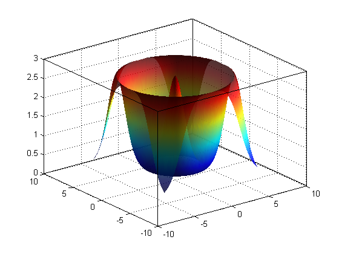
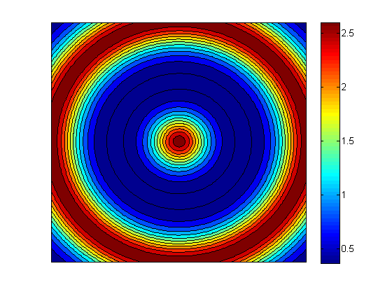
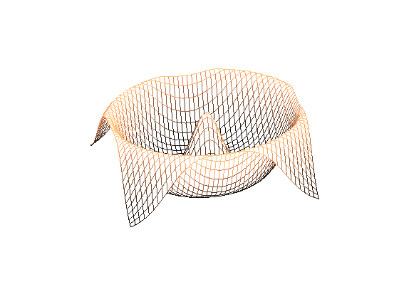
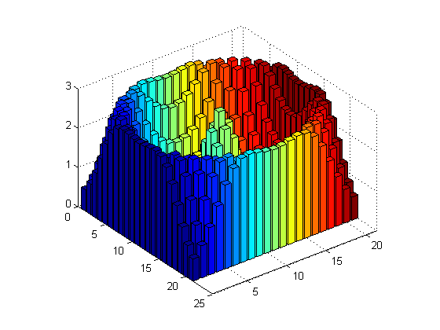
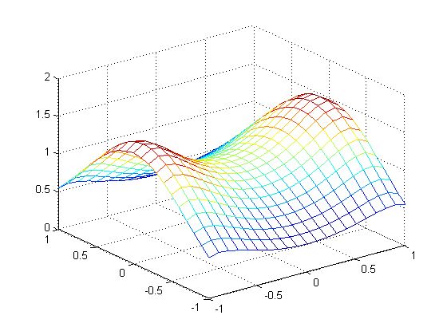
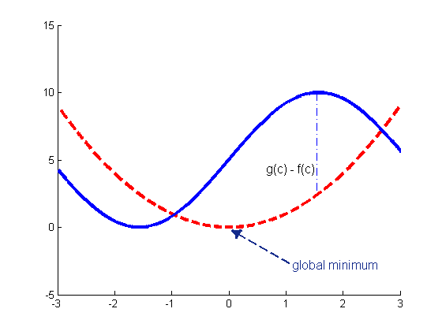
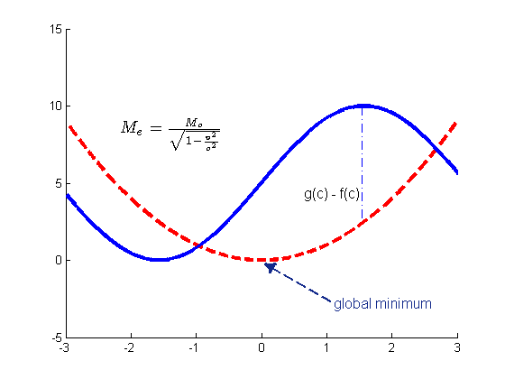
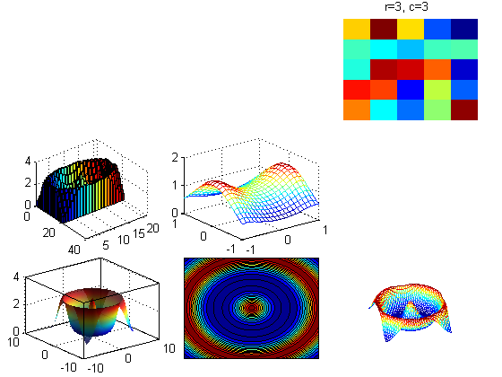
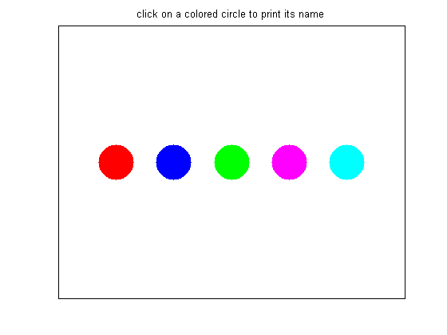

More advanced plotting features
In this chapter, we discuss some more advanced features.
Contents
3D Surface and Contour Plots
To graph a function of two variables we need to first evaluate that function over a grid of points, not just a line as in the 2D case. We use the meshgrid() function to create such a grid, as in this example.
f = @(x,y) exp(cos(sqrt(x.^2 + y.^2))); % a function of two variables d = -2*pi:0.1:2*pi; % domain for both x,y [X,Y] = meshgrid(d,d); % create a grid of points Z = f(X,Y); % evaluate f at every point on grid
Some functions, while still vectorized, will only operate on vectors and not matrices. The mvnpdf() function for example interprets a matrix of inputs, (say n-by-d), as n, d-dimensional inputs, not n*d 1-by-1 inputs. We can still plot such functions in 3D with a few small changes. After obtaining X and Y from meshgrid(), save X's size, evaluate f by passing in X and Y as column vectors, (using the : operator), and then reshape the output Z back to the original size and continue as before.
[nrows,ncols] = size(X); % first obtain the size of X Z1 = f(X(:),Y(:)); % convert X,Y to column vectors and evaluate f Z1 = reshape(Z1,nrows,ncols); % reshape
There are several 3d plot types available. Here we use surf(), which plots the surface of the function, contourf() , which plots the contour lines of a function and fills the area between them with color, and mesh() , which is similar to surf(), displaying a wire mesh rather than a solid surface. The colors used in each are specified by the current colormap and can be changed by using the colormap() command. Type doc colormap for a list of options. There are several other 3d plotting functions: plot3() for instance is the 3d generalization of plot().
f4 = figure; % create a new figure p9 = surf(X,Y,Z); % plot the surface of the function shading interp; % interpolate between the points material dull; % alter the reflectance camlight(90,0); % add some light - see doc camlight alpha(0.8); % make slightly transparent box on; % same as set(gca,'box','on')
f5 = figure; % create a new figure p10 = contourf(X,Y,Z); % contour plot colorbar; % add a colorbar set(gca,'XTick',[],'YTick',[]); % remove all ticks
f6 = figure; % create a new figure r = 1:3:126; % mesh plots look better at lower resolution p11 = mesh(X(r,r),Y(r,r),Z(r,r)); % plot a mesh grid view([-15 60]); % change the viewing angle - see doc view colormap Copper; % change the colormap axis off; % turn off the axis completely
Note, the command view([90,90]) can be very useful to rotate a plot by 90 degrees, effectively reversing the locations of the x and y axes.
Below we display a 3d bar plot of the same underlying data. We take advantage of the mat2cell() command to partition the Z data into 21x21 6-by-6 blocks, each block stored within a cell. We then use the cellfun() function to replace each block with its mean. We can use this same technique to apply any function to arbitrary sized blocks of a matrix. Note that when the size of the data within cells is different, 'UniformOutput' must be set to false.
f7 = figure; grouped = mat2cell(Z,6*ones(21,1),6*ones(21,1)); % partition matrix into 6-by-6 blocks fconv = @(X)mean(X(:)); % create function handle convCell=cellfun(fconv,grouped,... 'UniformOutput',false); % apply that function to every block convMat = cell2mat(convCell); % convert back to a, (smaller) matrix p12 = bar3(convMat); % display a 3d bar plot of the aggregated data colormap jet % change the color map
Virtually everything we said about customizing 2D plots applies equally to 3D plots. We can add a title, a legend, labels using xlabel() , ylabel() , and zlabel() , change the range of the axes, the font size, etc.
3D plotting in Matlab requires a uniform grid of points but the data we obtain from experiments or measurements may not satisfy this constraint. In such cases, we can use the griddata() function to interpolate along a uniform grid of points for us.
f8 = figure; randn('state',0); % seed the normal random num generator X = randn(100,50); % data captured at these points. Y = randn(100,50); Z = cos(X.^2).*exp(X.^2 - Y.^2); % value of data at these points d = -1:0.1:1; % X,Y range of our data [XI, YI] = meshgrid(d,d); % create our grid as before ZI = griddata(X,Y,Z,XI,YI); % interpolate to obtain ZI p13 = mesh(XI,YI,ZI); % mesh of the interpolated points
Annotations and the Plot Editor
Matlab provides an interactive graphical interface for modifying and inspecting existing figures. This mode can be entered by selecting 'view->Figure Palette' or by selecting the appropriate shortcut button on the figure toolbar. Here we can add annotations such as text, arrows, and shapes as you would in a program like powerpoint. We can also inspect and change attributes as an alternative to using set() and get() .
Once you have added elements, you can see the m-code that generates these objects by going to 'File -> Generate M-File'. It is usually easier to add annotations graphically first, generate the m-code and then add the appropriate lines to the original source file so that we can regenerate the complete figure at will. Alternatively, you can save a Matlab figure as a .fig file maintaining all of the graphics object information for future editing.
We will now add a few annotations to a simple figure. Annotations are placed relative to the figure window, not the axes. The location is, by default, specified by normalized coordinates between 0 and 1 so that [0.8 0.4] is the point 80% of the width from the left and 40% of the height from the bottom. In the case of a line or an arrow, we specify two x-y pairs, denoting the start and end points. In the case of a text box we specify four numbers, the x and y coordinates followed by the width and height of the box. Type doc annotation for more information. These commands were generated automatically after adding the annotations in the plot editor.
f = @(x) x.^2; % create a function of x, namely f(x) = x.^2 g = @(x) 5*sin(x)+5; % create a second function of x, g(x) = 5*sin(x) + 5 res = 0.001; % resolution of the plot domain = -pi:res:pi; % the domain of x, (i.e. points at which to evaluate f,g) f3 = figure('Color',[1,1,1]); hold on; % new figure with a white background p5 = plot(domain,f(domain),'--r','LineWidth',3); % plot a thick dashed red line p6 = plot(domain,g(domain),'-b','LineWidth',3); % plot a thick solid blue line axis([-3,3,-5,15]); figure(f3); % the text arrow annotation(f3, 'textarrow' , [0.6616 0.5251],[0.1997 0.3038] ,... 'TextEdgeColor' , 'none' ,... 'TextLineWidth' , 2 ,... 'FontSize' , 12 ,... 'String' , {'global minimum'} ,... 'HeadStyle' , 'deltoid' ,... 'LineStyle' , '--' ,... 'LineWidth' , 2 ,... 'Color' , [0.07843 0.1686 0.549] ); % the dotted line annotation(f3, 'line' , [0.7176 0.7176],[0.7176 0.4154] ,... 'LineStyle' , '-.' ,... 'LineWidth' , 1 ,... 'Color' , [0 0 1] ); % the text box annotation(f3, 'textbox' , [0.59 0.47 0.15 0.05] ,... 'String' , {'g(c) - f(c)'} ,... 'FontSize' , 12 ,... 'FitBoxToText' , 'off' ,... 'LineStyle' , 'none' ); set(f3,'HandleVisibility','on');
Latex
Matlab supports the inclusion of both tex and latex markups in figures. This can be useful when you want to include mathematical formulas. For many purposes, simple tex is sufficient. For example, you can write super scripts with the ^ character and subscripts with the _ character, (notice the legend) and include Greek letters using say \alpha or \gamma. To include more complicated latex markups, you have to specify that you want to use the latex interpreter and then surround the mathematical text in $ symbols as shown below. Tex and Latex markups are supported in annotations, legends, and titles but unfortunately not in axis labels via the xlabel() , ylabel() , zlabel() commands or in axis tick labels. If you want to use latex in these locations, you have to add the text manually via annotations.
annotation(f3, 'textbox' , [0.2277 0.6333 0.2081 0.0625] ,... 'Interpreter' , 'latex' ,... 'String',{'$M_e = \frac{M_o}{\sqrt{1 - \frac{v^2}{c^2}}}$'},... 'FontSize' , 14 ,... 'FitBoxToText' , 'on' ,... 'LineStyle' , 'none');
Warning: Unable to interpret LaTeX string
"$M_e"
Warning: Unable to interpret LaTeX string "$M_e
="
Warning: Unable to interpret LaTeX string "$M_e
= \frac{M_o}{\sqrt{1"
Warning: Unable to interpret LaTeX string "$M_e
= \frac{M_o}{\sqrt{1 -"
Warning: Unable to interpret LaTeX string
"\frac{v^2}{c^2}}}$"
Warning: Unable to interpret LaTeX string "$M_e
= \frac{M_o}{\sqrt{1 -\frac{v^2}{c^2}}}$"
 Coordinate Conversion
Sometimes we would like to specify where an annotation should go relative to the current set of axes, rather than relative to the figure window as a whole. For instance, perhaps you would like an arrow to point at coordinate (3,4) on your current axes; what point is this relative to the whole figure? rel2abs is a handy function to do this conversion.
Multiple figures inside a figure
Sometimes it can be useful to display multiple sets of axes in a single figure, perhaps to connect them graphically via annotations or just display them next to each other in a compact and convenient way. If we want the axes evenly spaced in a grid, the subplot() command can be useful, but to have more varied and customizable configurations, we have to add the axes manually. To do so, we take advantage of the 'Parent' attribute of the graphics objects. Recall that figures are composed of axes and annotation objects and axes are composed of various plot objects. We will create a new plot and add it along with some of the plots we have already done. The copyobj(h,p) function copies a graphics object with handle h and assigns the new object to parent p.
froot = figure; nr = 3; nc = 3; sp = 0.05; % white space around each subfigure in percent % solve nc*(w+sp)+sp = 1 for w: (1-sp)/nc = w + sp w = (1-sp)/nr - sp; % width of each subfigure r = 3; c = 3; newAx = axes('Parent',froot,'Position', [sp+(c-1)*(w+sp),sp+(r-1)*(w+sp),w,w]); imagesc(rand(5,5), 'Parent', newAx); title(sprintf('r=%d, c=%d ', r, c)); axis off figs = [f4, f5, f6, f7, f8]; rows = [1, 1, 1, 2, 2]; cols = [1, 2, 3, 1, 2]; for i=1:length(figs) r = rows(i); c = cols(i); set(copyobj(gca(figs(i)),froot),'Position', [sp+(c-1)*(w+sp),sp+(r-1)*(w+sp),w,w]); end
Root Properties
The top level Matlab graphics object is root and its handle is 0. We can access and set the root attributes as we would any other graphics handle object using get(0) and set(0). Root's most useful attribute is probably 'ScreenSize', which gives the current size, (resolution) of the screen in pixels, by default, or in what ever units the 'Units' property has been set to. If you work with multiple simultaneous monitors, the 'MonitorPositions' attribute is also useful. Here we obtain the screen size and demonstrate how to maximize a figure programatically.
set(0,'Units','pixels'); % set the units to pixels screenSize = get(0,'ScreenSize') % get the monitor resolution hgap = 5; vgap = 45; width = screenSize(3)-2*hgap; height = screenSize(4)-2*vgap; newPosition = [hgap,vgap,width,height]; f = figure('Position',newPosition,'ToolBar','none'); % set the size and position close(f); % close the figure
screenSize =
Columns 1 through 3
1 1 1440
Column 4
900
As root is the top level graphics object, we can query it for a list of the handles of all of the current figures using the allchild() function.
handles = allchild(0)'
handles =
Columns 1 through 4
13.0000 12.0000 11.0000 10.0000
Columns 5 through 8
9.0000 8.0000 7.0000 173.0226
Columns 9 through 12
3.0000 5.0000 6.0000 4.0000
Columns 13 through 14
2.0000 1.0000
Window size defaults and related settings as well as the maximum recursion limit is also set here; I suppose for lack of a better place.
Rotating Figures and Creating Movies
Figures can be rotated or moved with the mouse by first clicking on the appropriate shortcut button on a figure window toolbar. However, we can also automate and animate the rotation by using the camorbit() command.
figure(4); % bring this figure to the foreground. axis vis3d % allow for rigid 3d rotation for i=1:36 % change camera angle 36 times camorbit(10,0,'camera') % 10 degree increments pause(0.01); % slow it down slightly end close(4);
We can also create a movie by capturing frames using the getframe() command and playing them with the movie() function. Alternatively we can create an avi file with the avifile() , and addframe() functions. Read their help entries for more information and examples.
There are many other functions that can be used to adjust the camera angle and motion such as camdolly() , campan() , camzoom() , and camroll() .
Creating Graphical User Interfaces
Matlab has good support for the creation of graphical user interfaces. To launch an interactive GUI builder, type guide at the command prompt. Here, we will only briefly touch on some of the ways in which users can interact with figures. To learn more about creating GUIs type doc guide and click on "Creating GUIs" at the bottom of the help page.
Customizing callback functions when you click on a figure
As a simple exampl of a GUI, we discuss the ginput() function, which returns a matrix of coordinates selected with the mouse. Let's bring up the second plot we made, call ginput() and select a few data points to return their coordinates. ginput(n) waits for n user clicks before returning the n points, whereas ginput() , without any parameters, allows you to select any number you like and returns only when the user presses the enter key. A similar function, gtext(txt) places the specified string at the location selected by the mouse.
%figure(f1); %C = ginput(5) %close(f1);
The above functions operate by assigning a callback function to the axes object, which gets executed whenever the user clicks within the axes. We can assign our own function to perform whatever action we wish when this happens. Most Matlab graphics objects have callback attributes, which can be viewed using the get() command and set using set() .
The only constraint on callback functions is that they take 3 or more parameters as in myCallback(hObject, eventdata, handles): hObject is the object selected, whereas eventdata, and handles differ depending on the the callback. For more information, search for CallBack Syntax and Arguments in help.
All graphics objects in Matlab also have a 'UserData' attribute, which can be assigned any data you like. Since the clicked object is returned in hObject, we can retrieve this data with get(hObject,'UserData').
In this simple example, we plot 5 points in 5 different plots and assign each plot's 'UserData' attribute a color's name, which we will display when clicked. Since this is a simple example, we can create the callback inline but in general you should create a stand alone function say function myCallback(hObject,eventData,handles) and then assign @myCallback to the object's callback attribute. We also assign the callback to the current axes and figure objects after setting their 'UserData' entries to their respective colors. Try out the code for yourself.
figure; hold all; name = {'red','blue','green','magenta','cyan'}; color = {'.r','.b','.g','.m','.c'}; loc = [(1:5)',2*ones(5,1)]; callback = @(hObject,eventData,handles)display(get(hObject,'UserData')); for i=1:numel(name) plot(loc(i,1),loc(i,2),color{i},... 'MarkerSize',100,'UserData',name{i},... 'ButtonDownFcn',callback); end axis([0,6,1,3]); title('click on a colored circle to print its name') set(gca,'UserData','white') % Set the axes user data set(gca,'XTick',[],'YTick',[],'box','on'); set(gca,'ButtonDownFcn',callback); % assign the callback set(gcf,'UserData','grey'); % set the figure user data set(gcf,'ButtonDownFcn',callback); % assign the callback